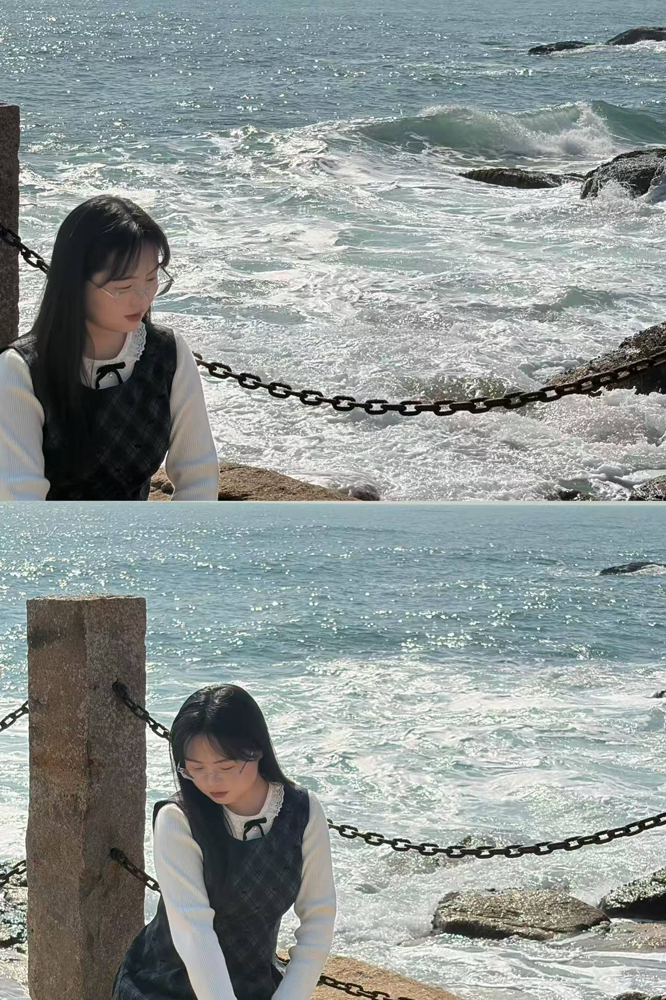

生活碎片
2026.03 | 杭州
西湖醋鱼 ✨ 来杭州的目的已经达到了哈哈哈
2026.02 | 平顶山
又来爬山 🧗♀️ 中原大佛
2026.02 | 惠州
连续两周单休，第二周周末爬山
2025.01 | 汕尾
去每个城市看海 🌊 看每个城市的海

2025.01 | 惠州
惠州 citywalk 🚶
2025.01 | 音乐
Apple Music 上成毅的《行路天涯》
2025.04 | 衡阳
南岳衡山 全程徒步6小时拿下
我喜欢的 things
生活信条
- 把节奏放慢，日子就会有温柔的答案
- 同频比天上的星星都难得
- 想成为工作中独当一面的大人